Овалы, математически, являются эллипсами, включая круги как особый случай. Эллипс вписывается в прямоугольник, определенный координатами (x0, y0) верхнего левого угла и координатами (x1, y1) точки, находящейся снаружи правого нижнего угла.

Овал будет совпадать с верхней и левой границами этого прямоугольника, но будет помещен внутрь правой и нижней сторон.
Для создания эллипса на холсте C используйте:
id = C.create_oval(x0, y0, x1, y1, option, ...)
который возвращает ID нового объекта овала на холсте C.
Опции для овалов:
Таблица 11. Опции объекта овала на холсте
activedashactivefillactiveoutlineactiveoutlinestippleactivestippleactivewidth |
Эти параметры определяют шаблон пунктира, цвет заливки, цвет контура, шаблон контура, шаблон заливки и толщину контура, используемые, когда овал находится в состоянии tk.ACTIVE, то есть когда указатель мыши находится над овалом. |
dash |
Чтобы создать пунктирную границу вокруг овала, установите эту опцию в шаблон пунктира; см. раздел 5.13, "Шаблоны пунктира" |
dashoffset |
При использовании опции dash опция dashoffset используется для изменения выравнивания шаблона пунктира границы относительно овала. См. раздел 5.14, "Согласование шаблонов пунктира". |
disableddashdisabledfilldisabledoutlinedisabledoutlinestippledisabledstippledisabledwidth |
Эти параметры определяют внешний вид овала, когда состояние элемента равно tk.DISABLED. |
fill |
По умолчанию внутренняя часть овала прозрачна, и значение fill='' выбирает это поведение. Вы также можете установить эту опцию на любой цвет, и внутренняя часть эллипса будет заполнена этим цветом. |
offset |
Смещение шаблона заливки внутренней части. См. раздел 5.14, "Согласование шаблонов пунктира". |
outline |
Цвет границы вокруг овала. По умолчанию outline='black'. |
outlineoffset |
Смещение шаблона пунктира границы. См. раздел 5.14, "Согласование шаблонов пунктира". |
outlinestipple |
Шаблон заливки, используемый для границы. Для значений см. ниже stipple. |
stipple |
Битовое изображение, указывающее, как будет заштриховываться внутренняя часть эллипса. По умолчанию stipple='', что означает сплошной цвет. Возможное значение: stipple='gray25'. Не влияет, если fill не был установлен в какой-либо цвет. См. раздел 5.7, "Битовые изображения". |
state |
По умолчанию элементы овала создаются в состоянии tk.NORMAL. Установите эту опцию в tk.DISABLED, чтобы овал не реагировал на действия мыши. Установите ее в tk.HIDDEN, чтобы сделать элемент невидимым. |
tags |
Если строка, то овал помечен этой строкой. Используйте кортеж строк, чтобы пометить овал несколькими тегами. См. раздел 8.4, "Теги холста". |
width |
Ширина границы вокруг внешнего края овала. По умолчанию 1 пиксель; см. раздел 5.1, "Размеры" для возможных значений. Если вы установите эту опцию на ноль, граница не будет отображаться. Если вы установите эту опцию на ноль и сделаете заливку прозрачной, вы можете сделать весь овал невидимым. |